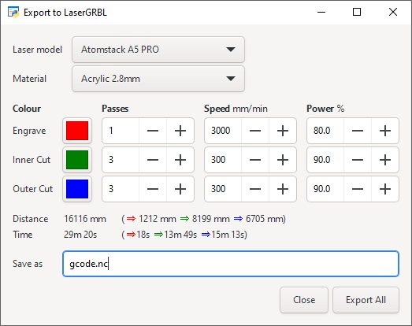
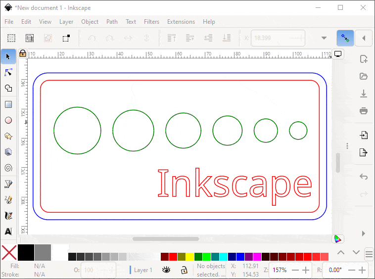
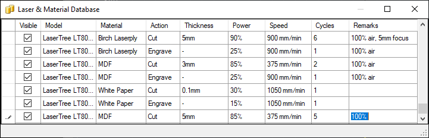

This free extension for Inkscape speeds up preparation of laser cutting jobs if you use LaserGRBL (included free with most laser cutters).
Pick your model of laser and material / thickness from pulldown lists, then export a complex job directly into LaserGRBL with one click. Use different coloured lines for each part of a job. eg, red lines to engrave in a single pass at 3000 mm/min @ 80% power, but blue lines cut in 3 passes at 300 mm/min @ 90% power.
The emphasis is on it being very easy to use, with the bare minimum of settings.

What this extension doesn't do:
Object > Convert to path on any text firstDownload the latest Inkscape and LaserGRBL packages.
To manually install this extension, download and unpack the archive file. Copy the export_lasergrbl folder to the location listed by the Inkscape menu:
Edit > Preferences > System: User extensions
For Windows users this will be something like:
%APPDATA%\inkscape\extensions
Restart Inkscape and the new extension will be available from the menu:
Extensions > Export > Export to LaserGRBL
The extension uses different coloured lines for each part of a job, naming them: Engrave, Inner Cut & Outer Cut colours. However these are just labels, and your job might actually use them for engraving 3 colours at different depths, or only consist of basic cutting with a single colour. In the animation below the red line & text are engraved first, then the green circles are inner cuts, and finally the blue outer cut releases the finished piece. (Inner cuts are usually done before outer, otherwise the overall piece may move when released and any further cuts would be in the wrong place).

You can export your entire document, or make a selection of objects / groups. Then open the extension from the menu:
Extensions > Export > Export to LaserGRBL
Firstly choose your model of laser from the pulldown, and the material you are using. This is only a shortcut, and you can leave them blank and enter your own numbers for passes / speeds / powers.
Click on a coloured box to change the colour to one from your Inkscape document, or alternatively you could edit your document to use the default red / mid-green / blue. If you don't need any engraving then don't use that colour, or set it to zero passes. Other colours are not exported, so for example your document could include annotations / notes that aren't sent to the laser cutter.
Don't assume the default passes / speed / power settings are correct, as there is a lot of variation within even the same model of laser, the exact focal distance, air assist volume, between sheets of the same material and even the humidity (when cutting wood). It is always worth doing a small test cut first and tweaking the settings as required, before starting a long job. When trying a new material or thickness, you can generate test patterns in LaserGRBL to "dial in" the best settings for your particular set up.
The total distance the laser head will move is shown, with distance per colour. A rough estimate of the time is also shown, so you can see how making more passes or using a slower cutting speed will increase the time taken.
By default the new G-code file will be saved with the same filename & location as your Inkscape document, but with a .nc extension. You can change this if wanted, before finally clicking on "Export All". If the button is greyed out then there is nothing set to export: check the colours are correct, there is at least one pass set, and that you are exporting all the document (or the selection you intended).
LaserGRBL should automatically start with the new job open. If it doesn't then set in your operating system. eg, for Windows: right-click on any .nc file, Open with > Choose another app select LaserGRBL and tick "Always use this app to open .nc files". You can also start LaserGRBL yourself, and load the saved G-code file.
You've already set the number of laser passes for the job, so you don't need to do anything in LaserGRBL except click the connect icon, wait a few seconds, then click play to start cutting.
You can add (or edit) the contents of the pulldowns using LaserGRBL's Grbl > Material DB. Scroll to the bottom of the table to add a new entry:

The extension uses a local copy of the material db file. After making any changes in LaserGRBL, you'll need to copy the file into the extension's own folder. On Windows this might be:
%APPDATA%\LaserGRBL\UserMaterials.psh →
%APPDATA%\inkscape\extensions\export_lasergrbl\UserMaterials.psh
One helpful feature is the 'Remarks' column, which lets you record notes about using a material. eg, the focal distance for cutting that thickness with your laser, or the fumes need a certain air assist setting. These notes are shown when you choose that material in the Inkscape extension.
To make the extension pulldowns shorter, you can hide laser models that you don't own by unticking the 'Visible' column.
The default settings can be altered by editing the export_lasergrbl/export_lasergrbl.ini file with any text editor. You can override the defaults when you run the extension.
laser = Atomstack A5 PRO
Name of your laser cutter model, or leave blank. Should be exactly as it appears in the pulldown menu
material = Acrylic 2.8mm
Name of the material you use most often, or leave blank. Should be exactly as it appears in the pulldown menu
colors = #ff0000,#008000,#0000ff
Up to 3 colours that you use in your Inkscape documents for: engraved, inner cuts & outer cuts. Each colour is a 6-digit hex code, "#rrggbb". You can see the hex code for any colour in your document by right-clicking in this extension's colour-chooser, and select 'Customize'
maxrate = 6000
Maximum speed (in mm/min) that your laser head can move at. This is ONLY used for estimating how long the job will take, it doesn't change the speed. For your model of laser you can copy the speed from LaserGRBL's Grbl > Grbl Configuration and scroll down to "$110 X-axis maximum rate"
darktheme = 0
Set to 1 if you'd like the extension window to use white text on a dark background. See Inkscape's Edit > Preferences, "Interface > Theming > Use dark theme" checkbox
Any feedback, suggestions or bug reports is VERY welcome. Below are some ideas, but I'll wait for feedback before working on any of them:
.ini configuration file?Object > Convert to path first)